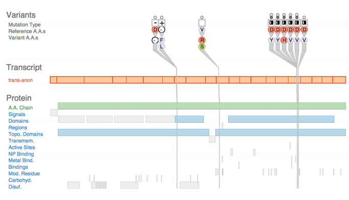

Interactivity is crucial for building vis tools that handle complexity. When datasets are large enough, the limitations of both people and displays preclude just showing everything at once; interaction where user actions cause the view to change is the way forward. Moreover, a single static view can show only one aspect of a dataset. For some combinations of simple datasets and tasks, the user may only need to see a single visual encoding. In contrast, an interactively changing display supports many possible queries
In all of these cases, interaction is crucial. For example, an interactive vis tool can support investigation at multiple levels of detail, ranging from a very high-level overview down through multiple levels of summarization to a fully detailed view of a small part of it. It can also present different ways of representing and summarizing the data in a way that supports understanding the connections between these alternatives.
